Kashihara, Nara: things to do, food and stays
Kashihara · Nara
Kashihara
Highlighted on the Nara map.
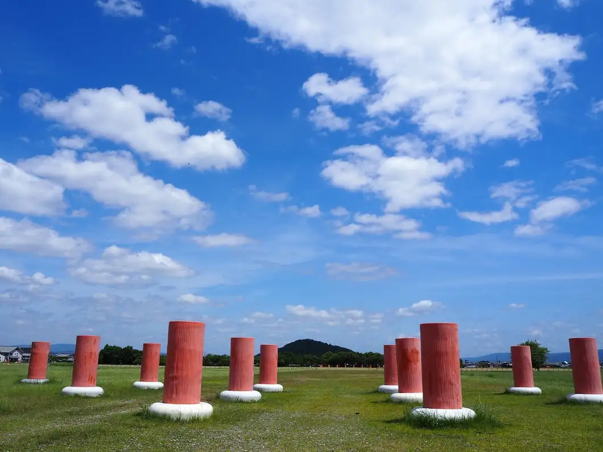
Stay
カンデオホテルズ奈良橿原
Kandeo Hotels Nara Kashihara
グランドメルキュール奈良橿原
Grand Merukyuru Nara Kashihara
大和八木ゲストハウス 笑顔
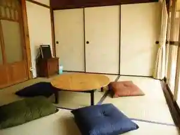
Yamato Yagi Guesthouse Egao
Guesthouse in Yagi, Kashihara with a renovated traditional house.
大和橿原シティホテル
Yamato Kashihara City Hotel
Hotel in Yagi, Kashihara with parking and business travelers; 4-minute walk from Kintetsuyamatoyagiekijrunebi Station.
ビジネス観光ホテル河合
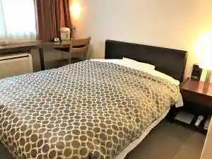
Business Kanko Hotel Kawai
Hotel in Kitahachiki, Kashihara with parking and business travelers.
嘉雲亭
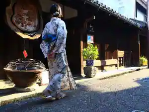
Ka Kumo Tei
ゲストハウスはじまり
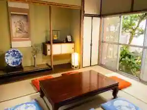
Guesthouse Hajimari
橿原オークホテル
Kashihara Oku Hotel
Hotel in Kume, Kashihara with business travelers; 2-minute walk from Kintetsukashiharajingumae Station.
一三屋
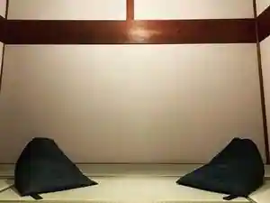
Kazumi Ya
ＨＡＮＡＲＥ屋
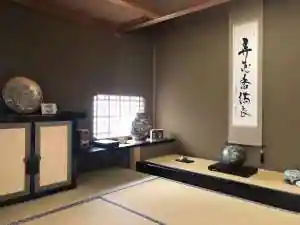
HANARE Ya
Dining
#肉といえば松田 奈良本店
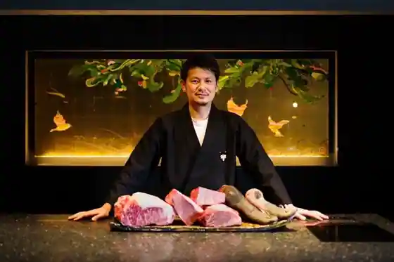
# Niku Toieba Matsuda Naramoto
焼肉 三日月
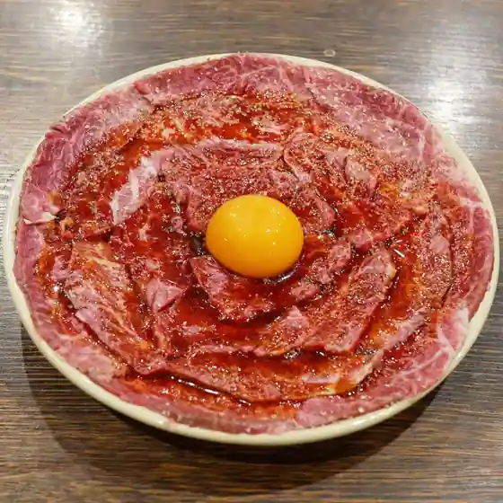
Yakiniku Mikazuki
鮨 かわしま
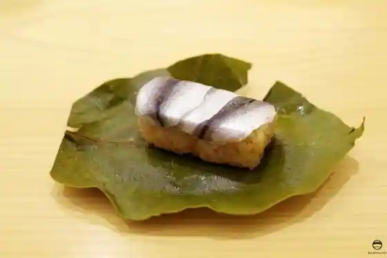
Sushi Kawashima
麺処 と市
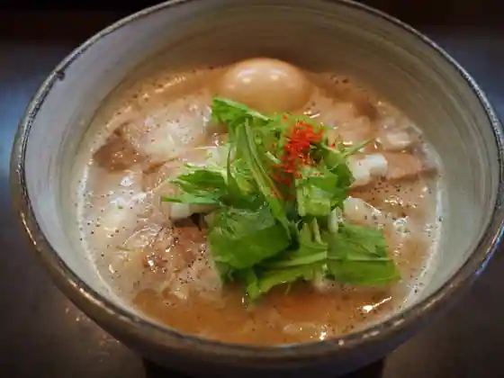
Men Tokoro To Shi
だんご庄 本店
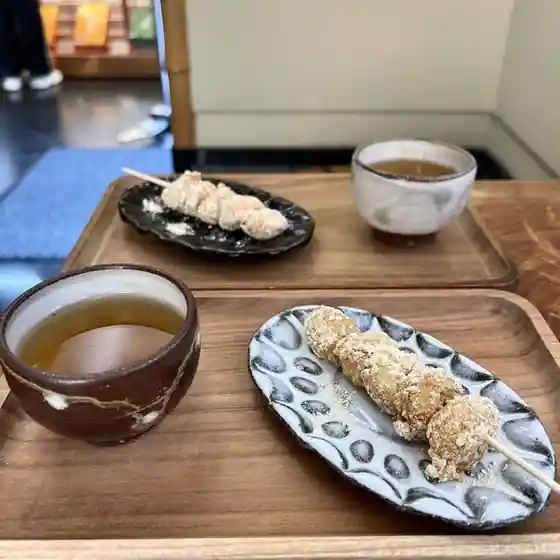
Dango Sho Hon
steak&wine Lamp
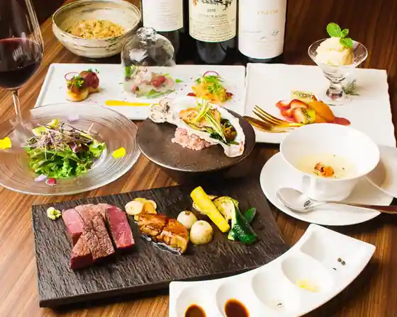
steak&wine Lamp
フィレ肉専門店 にくぞう
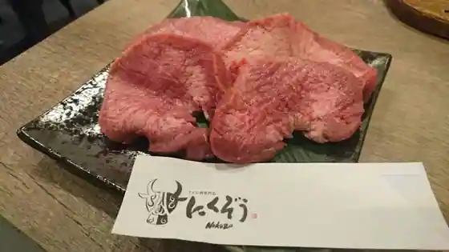
Fire Niku Senmon Nikuzo
森本
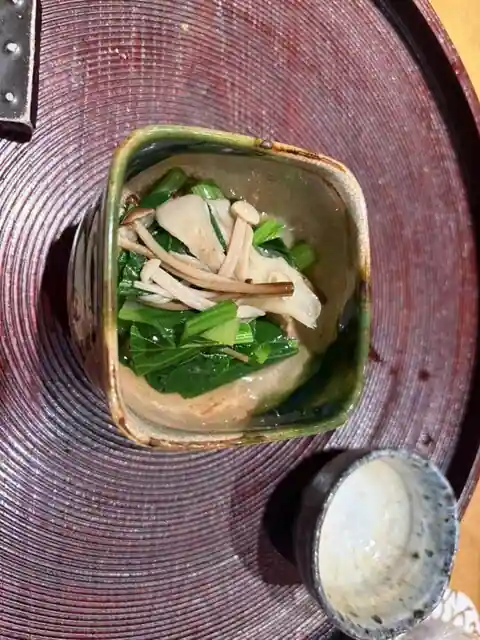
Morimoto
美食酒房 如意
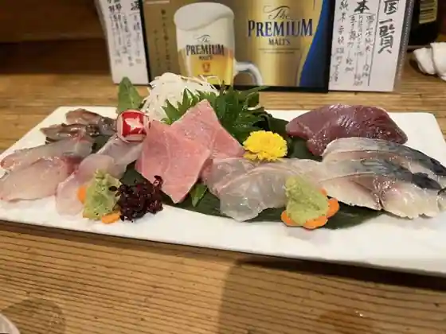
Bishoku Sake Bo Nyoi
割烹 利助
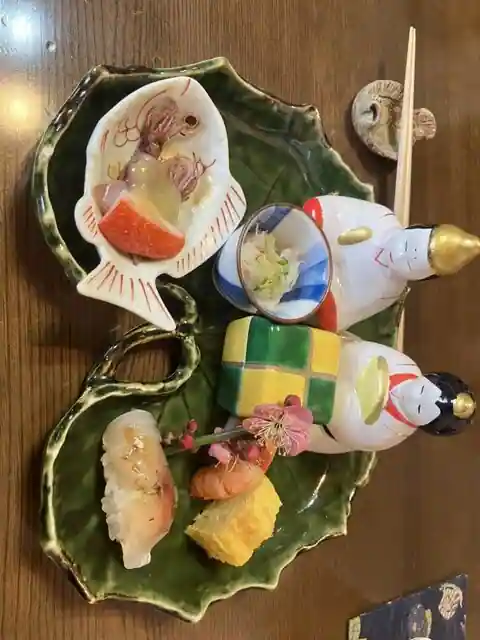
Kappo Risuke
八向
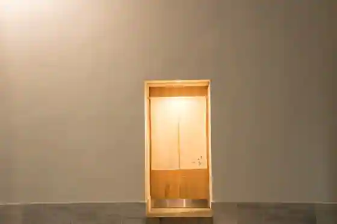
Hachi Ko
だんご庄 八木店
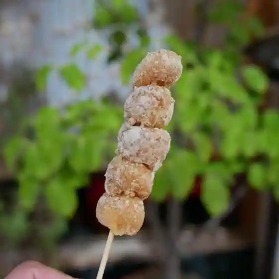
Dango Sho Yagi
いぶし吟 ふじや
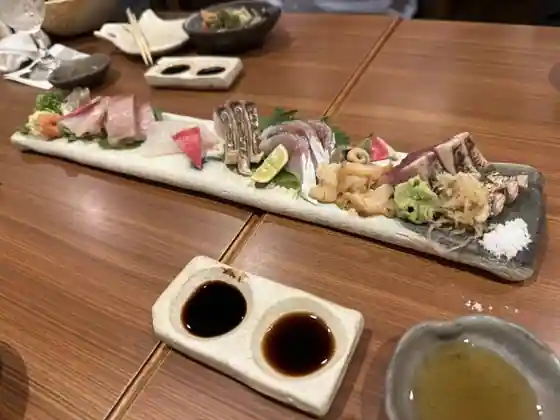
Ibushi Gin Fujiya
Tama
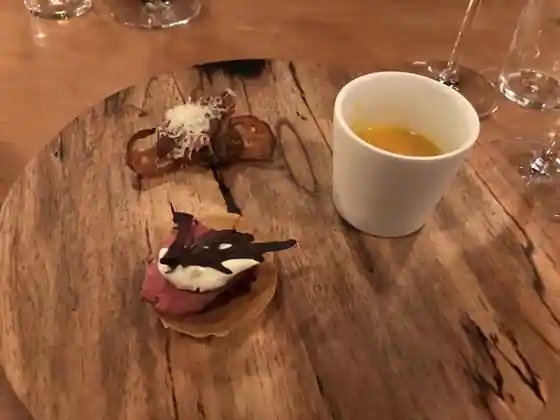
Tama
麺屋いちびり
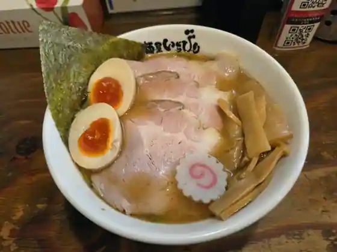
Men Ya Ichibiri
鮨よし
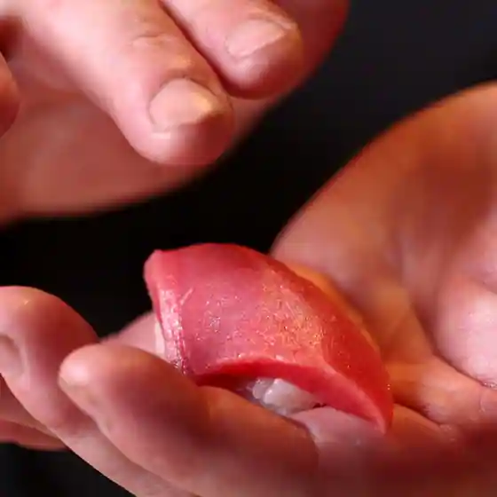
Sushi Yoshi
ジョルコ
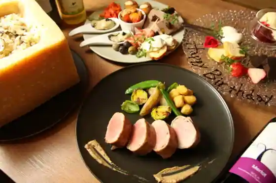
Joruko
つけ麺 いちびり
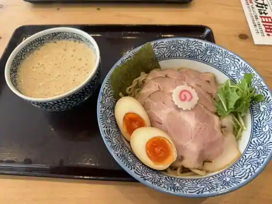
Tsuke Men Ichibiri
ミツカン
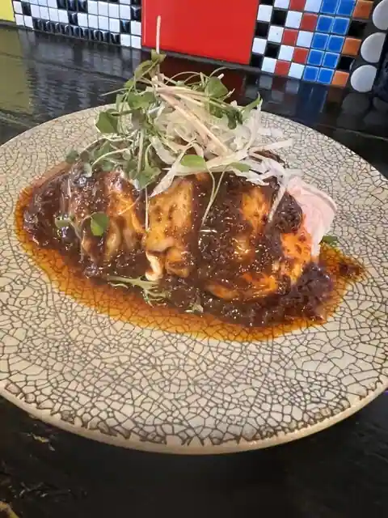
Mitsukan
中華屋 炫
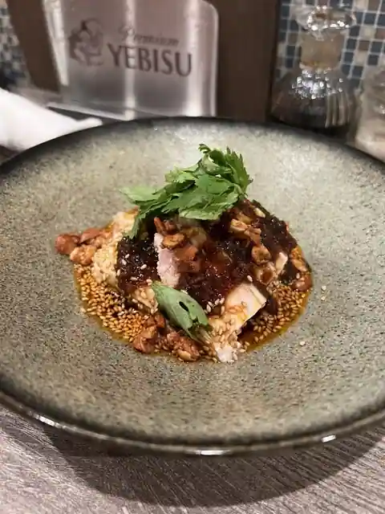
Chukaya
鮨遖
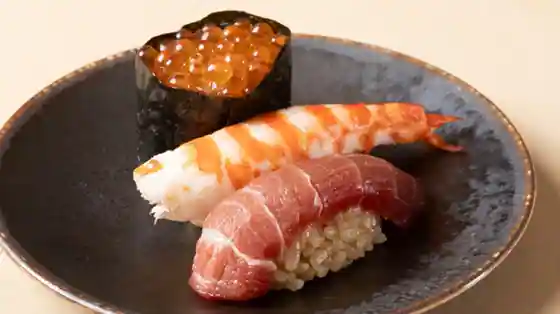
Sushi Appare
情熱うどん 荒木伝次郎
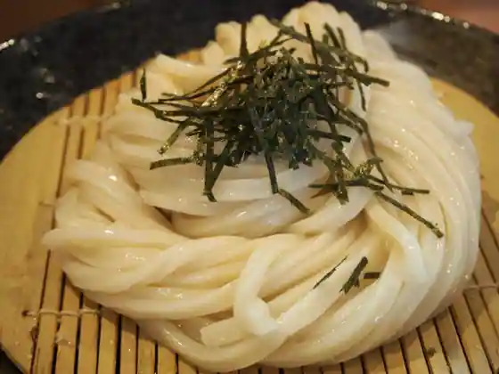
Jonetsu Udon Araki Denjiro
ハックベリー
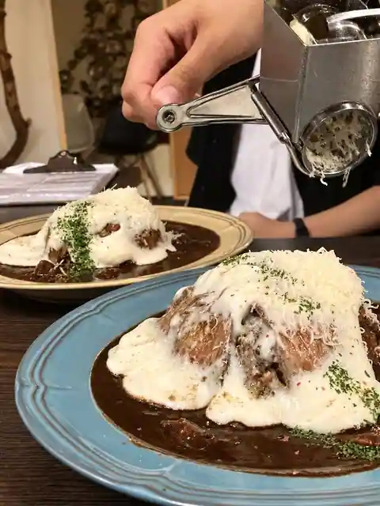
Hakkuberi
ラブレー
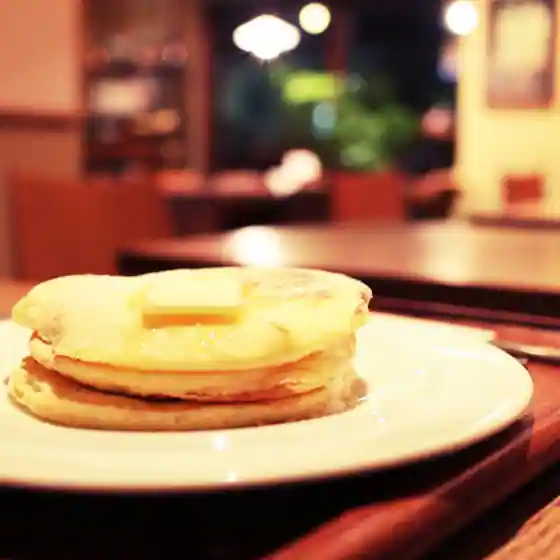
Rabure
Sights
Fujiwara Kyuseki
Ofusa Kannon
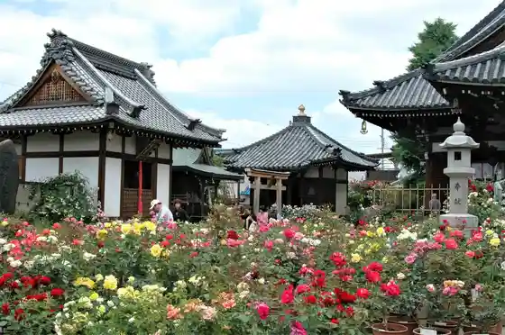
Kashihara Shrine
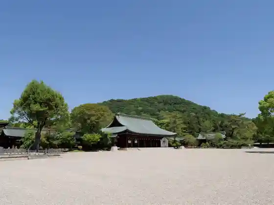
Nara Prefectural Kashihara Kokogaku Kenkyusho Fuzoku Museum
Sei Hasu Tera Dainichi Do
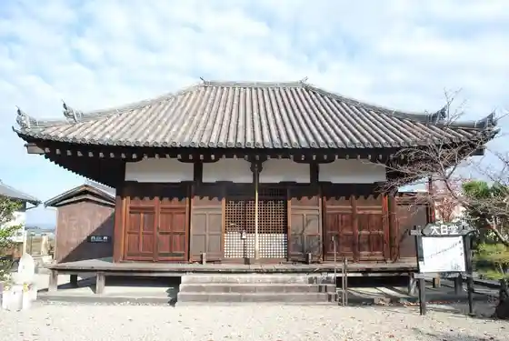
Imai Town
Masuda Iwafune
Honyaku Shi Jiseki
Rekishi Ni Iko Kashihara Museum
Nara Bunkazai Kenkyusho Fujiwara Kyuseki Shiryoshitsu
Imai Machinami Koryu Center Hana Bo
Miguransu
Kashihara Konchu Kan
Kume Tera
Shonen Tera
Iruka Shrine
Imanishi Ie House
Mikuriya Ko Kannon Myoho Tera
Shobu Ike Burial Mound
Kasuga Shrine (Kashihara)
Nara Prefectural Kashihara Kokogaku Kenkyusho
Kyu Kometani Ie House
Kishigami Sanwa Sono
Kashihara Shrine Shinrin Yu En
Tenko Yama Shrine
Kashihara Shrine Oyobi So no Shuhen
Kashihara Shrine Takaramono Kan (Sukei Hall)
Hachiman Shrine (Kashihara)
Kashihara Ritsu Kashihara Manyo Horu